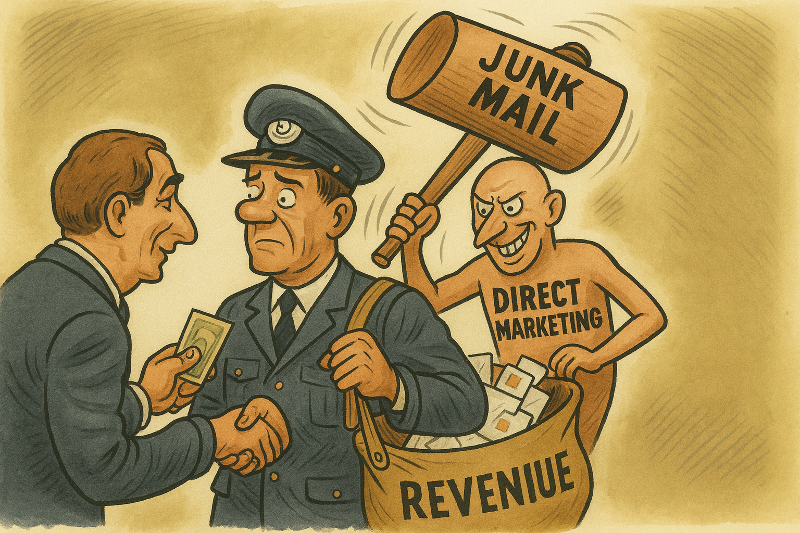
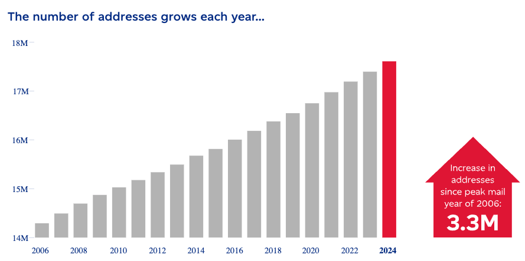
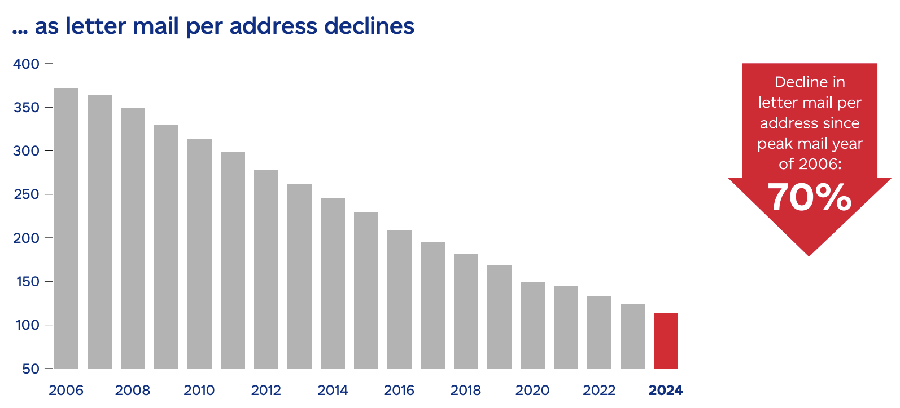
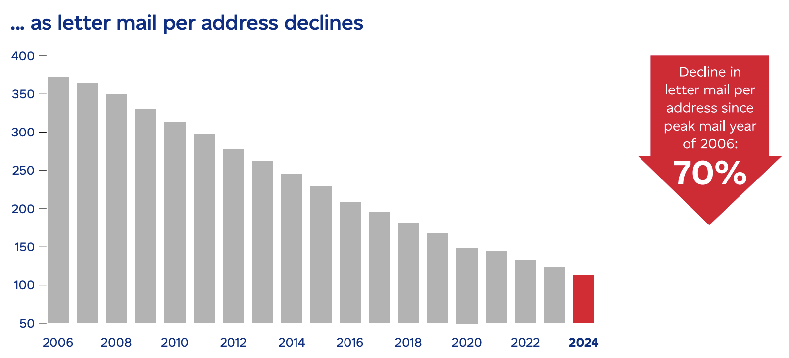

Does Junk Mail Help or Hurt Canada Post?
There has been a fair amount of attention paid recently (including an excellent About That segment on CBC New’s Youtube account) to the poor financial state of one of the country’s premier institutions: Canada Post.
A few things I’ve been wondering after watching that segment, and reading Canada Post’s own 2024 Annual Report:
- Does ‘junk mail’ actually drive the need for daily universal deliveries
- Would eliminating junk mail allow for meaningfully fewer deliveries and thus real savings?
- How much of the remaining cost is actually ‘variable’ versus ‘fixed’?
1. Does Canada Post Deliver to Every Address, Every Day?
Legal Obligation
The Canada Post Corporation Act mandates “universal service”, i.e., delivery to all addresses, at a prescribed frequency (traditionally 5 days/week in most urban areas), regardless of mail volume. This obligation is not contingent on demand, but on service guarantee [2, p.28].
Operational Reality
In practice, however, the amount of mail delivered per address has declined steeply. A typical urban mailbox might have (I’m making up numbers here):
- 1–2 addressed letters a week
- 1–2 pieces of admail/junk mail (per delivery day)
So what’s the problem?
- the number of addresses they have to deliver to has increased (which costs them money) even as,
- the amount of mail each address receives (where they make money) has fallen.
 

But what actually drives delivery frequency?
As Canada Post puts it, the number of addresses they have to deliver to has increased (which costs them money) even as the amount of mail each address receives (where they make money) has fallen [2, p.9].
But what actually drives delivery frequency? And why the increase in coverage/number of addresses, even as letter mail itself is becoming less relevant?
- Personal/transactional mail (bills, notices, etc.) is infrequent and should not, by itself, justify daily visits to every address
- But admail/junk mail, what Canada Post calls “Direct Marketing Mail” is generally batch-processed for entire routes, so nearly every mailbox gets something most days (since companies do not coordinate their marketing departments and ‘which day of the week’ an ad is sent out is to some extent random)
So although grandma may have switched to email and stopped sending you monthly check-in letters and you can hardly remember the last time you received a personal correspondence physically, you probably have no trouble remembering the last time you opened your mailbox to see a flyer from a company you never gave your address to.
Admittedly, part of this problem is probably urban sprawl and the persistent growth of single-family housing which takes up more land to house fewer people (relative to most other kinds of housing stock) [2, p.31] [3].
The problem then might be best described in two parts.
On the fixed costs side, Canada Post always has to retain enough workers to meet the ‘worst-case’ scenario, where every address in its coverage areas receive at least one piece of mail that day. This is a structural constraint that cannot really be avoided, short of relaxing the Crown Corporation’s universal service obligation (USO) mandate to serve every address, five days a week (which is already being recommended) [2, p.29].
On the other hand, it seems plausible that Canada Post could save at least some money if the number of addresses they actually had to deliver to, each day, was also lower. After all, their mandate is simply that they have to be prepared to deliver to every address (if it gets mail) — not that they must stop at every house along a route, every day.
This leads to the natural question:
2. What Happens If You Eliminate Junk Mail?
Immediate effect
Hypothetically, much fewer addresses would receive any mail on a given day (judging from my anecdotal experience of the proportion of junk mail to truly important mail I receive). Even if cutting out junk mail results in a reduction of just a fifth of the Post’s daily obligations, if Canada Post has to visit 20% fewer addresses a day, in theory, it could cut route mileage and save time significantly.
Prima Facie, this should result in savings on some combination of labour, time, and fuel.
The Laws of Physics and Time/Effort-Per-Delivery
- Delivering junk mail is time-intensive, even at high-density sites like apartment buildings, condo mailrooms, and cluster mailboxes
- There is a floor/lower bound on how quickly drivers can service each address. This floor is a constant factor independent of mail volume
- If it takes 5 seconds for a driver to find the right mail for each unit and put it into each mailbox, if there are 100 mailboxes it would still take them 500 seconds to service that address, compared to just 50 seconds if there were only 10 mailboxes that actually had mail that day
- Each additional piece (especially when mandatory for every box) adds real, measurable time:
- Unbundling, fanning out, and inserting into 100 slots is not free; it’s tedious and slow, especially for thick/awkward pieces
- Multiply this by thousands of addresses, and hours of paid labor per route, per day, may well be spent almost entirely on delivering ads that will probably go right into the garbage
If a typical suburban route covers 1000 houses, but junk mail (which is typically sent out en masse) is the only reason the route involves actually making stops at all 1000 addresses, eliminating junk mail would lead to savings simply because of fewer addresses that a delivery driver would have to stop at.
The data does not prove this, but it makes the premise plausible.
- By volume, transaction mail (personal letters from grandma, credit card statements, electricity bills) is only half the amount of deliveries made compared to junk mail [2]
- Even if the number of routes Canada Post is required to service remains the same, costs would be lower simply because fewer addresses means less time and work required to complete a route each day
Importantly, this may still be true even if one assumes that a lot of the addresses they deliver to are high-density residential areas, e.g. Condominiums where there are 100 units/post boxes located at the ‘same’ address
The Problem With Bulk Discounts for Junk Mail
A significant contributing factor may be that offering bulk pricing [5] at all for Direct Marketing mail is principally distortionary. Pricing junk mail as though higher volumes makes it cheaper to deliver ignores the reality of how junk mailing strategies work.
- Rationally, the nature of junk mail is intuitively that one sends it to as many households as possible since sending more mail (per day) to the same address generates complaints, not sales
- Businesses scale by expanding the set of addresses touched, not increasing the number of pieces per address
- Businesses do not get bulk discounts for coordinating with other businesses to send more mail to the same address
This means, in an unavoidable way, the ‘bulk’ in bulk pricing always relates to the number of addresses that mail must be delivered to because more mail only makes sense if it means more addresses.
This pricing regime therefore accelerates the divergence Canada Post itself highlights (more delivery points each year; fewer letters per point): ‘bulk’ junk mail adds coverage without adding to per-address density, so the denominator (addresses) continues rising, while the numerator (mail per address) falls.
5. Counter-Argument: Transaction Mail May Keep Address‑per‑day Amounts the Same
Admittedly, this is not an argument based on empirical data or rigorous economic models. Furthermore, mathematical proofs may not even be necessary to argue why this note’s position is wrong.
One scenario where removing junk mail altogether would still make no difference (or possibly worsen things) is if some types of transaction mail:
- Occur almost as frequently as junk mail, and
- Involve structurally similar ‘go to nearly-every-house’ burdens.
For example, things like credit card statements and electricity bills are classified under transaction mail. And it is almost guaranteed that every house on a route has electricity (I am open to counter-evidence), so it must be that they are receiving electricity bills in some way, presumably by mail.
Taken to the extreme, in this scenario, if Canada Post already has to stop along all 1000 houses on a route because all of them are receiving bills by mail, even if it stopped delivering junk mail, the overall work along each route remains the same.
This is the classic case where junk mail really isn’t the problem, and in fact helps subsidize the costs of operating a route since a stop needs to be made at every house regardless.
But how true is this really?
One argument is that junk-like Transaction Mail (e.g. credit card bills) do not come anywhere close to being as burdensome to deliver, even if by nature they produce the same stress on addresses-per-route.
For instance, while it is true that things like bills are also sent out en masse to every address along a route, in general:
- Households do not receive bills every day of the week, or even every week of the month
- Bills and credit card statements are typically sent out once a month
- And far from being purely stochastic, bills and notices are generally sent out at predictable times (often near the start or end of a month)
This is the main weakness of the argument that junk mail is simply ‘going along on a (expensive) ride’ that Transaction Mail has already bought tickets for. Although transaction mail may require the same coverage by volume, costs are lowered via concentration into a fewer number of days (that require reaching every address).
Transaction Mail Has The Exact Opposite Incentives to Junk Mail
But there is a stronger argument yet for why transaction mail will never create the same ‘nearly-every-house’ delivery burden: transaction mail has a fundamentally different economic premise.
Transaction mail is an expense for the business that is sending it out. From the hydro company’s perspective, they would probably prefer to send out as few letters as they could, because them sending you a bill is not an investment, it is a ‘friendly’ reminder.
This is different from junk mail, in that ads are an investment; businesses expect to make some return on their ads, which incentivizes them to send more (which again, from a single agent’s perspective always means more addresses and never more mail per address).
- Transaction Mail: the incentive for the sender (e.g. the utility company) is to minimize the frequency and volume of outbound mail to reduce costs
- This is one likely reason companies are increasingly pushing customers to e-billing
- The use of Canada Post is a reluctant necessity, not a growth strategy.
- Direct Marketing: the incentive for the sender (e.g. a local business) is to maximize reach to improve the chance of returns
Again, this is not a perfect or mathematically rigorous argument. But if one accepts that this underlying premise is sound, then the fundamental difference in business logic is what almost guarantees that junk mail will always be a higher-volume, higher-frequency burden on the system.
6. What Will It Take To Be Wrong or Right?
This is probably the most important direction for future research to focus on. If transaction mail alone is “2 billion items per year” (31.6% of all mail volume)… [2, p.75]
- What is its distribution (per address, per route)?
- Could transaction mail alone justify daily delivery on most routes?
Whether junk mail helps or hurts Canada Post will depend largely on what the true answer is.
- If certain types of Transaction Mail — that require stopping at every house along a route — occur often enough, having to deliver junk mail on top of that likely doesn’t add much to the overall costs of operations.
- But, if in reality, the kinds of ‘mass deliveries’ that transaction mail forces Canada Post to make only happen infrequently (once a month), then, cutting out junk mail (which may happen closer to every day) is almost likelier to result in savings
7. The (Best) Argument for Reducing Junk Mail
In the best-case scenario, the main reason Canada Post’s service mandate is so burdensome is because junk mail forces its theoretical, constitutional mandate (to service nearly every address in the country, every day) to become a functional one. In this case, eliminating junk mail will be beneficial.
Labour Time on Routes
- If carriers don’t have to slot flyers into every box, their time spent at each apartment, condo, or mailbox cluster is drastically reduced
- On a route with dozens of addresses, the total daily hours worked could shrink, possibly enough to allow route consolidation or a reduction in required overtime
Potential Cost Savings
- If the reduction is substantial enough, some routes could be merged or fewer carriers needed
- Similarly, individual drivers may face less time pressure making day-to-day work less intensive and stressful
8. Conclusion
There is not yet enough clear evidence to determine whether Canada Post would save more money by reducing the amount of junk mail it delivers relative to the amount lost from a revenue stream currently worth $930 million a year.
However, at least on paper, junk mail doesn’t seem to make that much money, while in theory, it simultaneously stands as a plausible reason they have to cover so many addresses every day.
What seems to have worked in most other jurisdictions is unfortunately the much simpler and painful tactic of relaxing service mandates to reduce the number of delivery days.
While it is highly unlikely that this one factor alone is responsible for enough inefficiency that addressing it would turn things around and make the service profitable, if the current crisis is the result of multiple, compounding problems, every step in the right direction is a good one.
And if, as the Post’s own 2024 Annual Report suggests, many cost-saving changes will soon be needed soon to save the service, this may well be one of them.
References
[1] CBC News. Canada Post is effectively bankrupt. Can it be saved? Youtube. Canadian Broadcasting Corporation; 2025 September 26. Available from: https://www.youtube.com/watch?v=hvMw6RazmrI
[2] Canada Post Corporation. 2024 Annual Financial Report. Ottawa: Canada Post Corporation; 2025. Available from: https://www.canadapost-postescanada.ca/cpc/doc/en/aboutus/financialreports/2024-annual-financial-report.pdf
[3] Young M, Tanguay GA, Lachapelle U. Transportation costs and urban sprawl in Canadian metropolitan areas. Research in Transportation Economics. 2016 December 1;60:25-34.
[4] United States Postal Service, Office of Inspector General. Analysis of Historical Mail Volume Trends. Report Number RISC-WP-24-008. Arlington (VA): United States Postal Service, Office of Inspector General; 2024 September 4.
[5] Canada Post. Mailing services. Available from: https://www.canadapost-postescanada.ca/cpc/en/commercial/mailing-services.page
Notes
- The full table of Canada Post’s data on its operations, assets, liabilities, mail revenue and volumes are available on pages 137-139 of its 2024 Annual Report
- Frustratingly, or perhaps intentionally, this data does not disaggregate the amounts spent servicing rural vs urban areas
- Data on the proportion of addresses or daily mail deliveries in their network that consist of solely junk mail/‘Direct Marketing’ mail is also not available